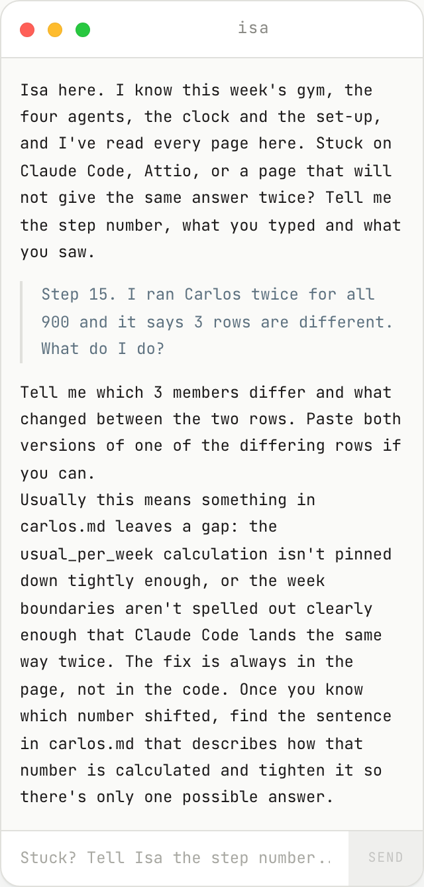

Carlos and Enrique get built
Tuesday. By lunch, Carlos runs on all 900 members and gives the same file twice, and Enrique has decided and written for one member, then ten.
Tuesday. Two agents get built this morning. Carlos first, because everything else reads his file. Then Enrique. Everything else today is the build guide on the zorro page, one step at a time.
This is what your screen should look like right now
A terminal, opened inside the gimnasio-zorro folder on your Desktop, with Claude Code saying hello. If yours does not, steps 1 to 7 of the build guide, now.
Terminal
$ cd Desktop/gimnasio-zorro
$ claude
Hello. What would you like to do?
█
On a Mac
PowerShell
PS C:\Users\you> cd Desktop\gimnasio-zorro
PS C:\Users\you\Desktop\gimnasio-zorro> claude
Hello. What would you like to do?
█
On Windows
Before anything else, this is the screen. A terminal, inside the gym folder, Claude Code open. Look at your laptop. If it is not this, open the build guide on the zorro page and do steps 1 to 7 now, and Isa is there if a step does not work. Nobody builds anything until this is their screen.
Stuck? Isa is on the zorro page
She has read every page there, the runbook, the four role pages and the build guide by step number. Tell her three things: the step number, what you typed, and what you saw.
- The step number. She knows what step 15 asks for and what it should show.
- What you typed. Paste the line, not a description of it.
- What you saw. The rows, the error, the number. She works from that, not from a guess.

Asked on the page on Saturday, and this is what she said.
Isa. She is in the column on the left of the zorro page, at the top on a phone. She has read every page there and knows the build guide by step number. She will not write your agent for you. She will tell you what you missed. Tell her three things: the step number, what you typed, what you saw. This is a real answer: I asked her about step 15 on Saturday, two runs giving different rows, and she asked which rows and pointed at the usual-per-week wording. Use her before you put your hand up.
Ask it loosely and you get a different answer each time
The same question, the same files, asked twice one minute apart on Saturday. Read the two verdicts. Neither one says which Monday it is looking from.
claude code
> Is Sergio Rubio (member Z0811) slipping? Use the files in the data folder.
He was slipping, and he's back, but not all the way back. Sergio came three times a week like clockwork from June through 8 August, then stopped dead for four weeks with no check-ins at all between 9 August and 4 September. He reappeared on 5 and 6 September and again on 10 September, so three visits in the last eight days against his usual six.
The August gap isn't just the Madrid summer. The whole gym only dropped about 12 percent in mid-August, from around 2,040 check-ins a week down to 1,776, while he went to zero. So something of his own was going on.
One thing worth knowing. The email the gym sent him on 31 August was never opened and never replied to, and he walked back in five days later anyway. So treat him as a member easing back in rather than one who needs chasing. If he's still at one or two visits a week by the end of next week, that's the point to say something.
claude code
> Is Sergio Rubio (member Z0811) slipping? Use the files in the data folder.
Sergio slipped, and he's already coming back.
He was a steady three to four visits a week from June through 8 August. Then he stopped for four weeks, nothing at all between 8 August and 5 September. He's back since, three visits in the last week, on 5, 6 and 10 September. His last check-in was two days ago.
A win-back email went to him on 31 August, in the middle of the gap. He didn't open it and didn't reply, so his return isn't down to that email as far as the log shows.
One thing worth knowing. He's on a Student plan, joined July 2024, goal is build muscle. An August gap in a student is more likely a summer break than someone drifting off. I'd leave him alone for now and only flag him again if he drops back under two visits a week for a couple of weeks.
This is why the page exists. I asked the loose question twice, one minute apart, same files. Two different answers. One says he was slipping and is back but not all the way. The other says leave him alone, a student in August is on a summer break. Both read the data up to today, because I never said which Monday. Neither one is wrong exactly, and neither one is the same shape, and a gym cannot run on that. So we do not ask questions. We write a page that pins the shape and the date.
Carlos is a page with four headings on it
This is the whole agent. Every number in it can be checked, and the last heading is a list of things it must not do. Steps 8 to 10 of the build guide.
carlos.md
## What it produces
One row per member, with these fields: member_id, first_name, last_name, goal, notes, visits_per_week_last12 (twelve whole numbers, oldest week first), usual_per_week (the average of the first nine of those twelve weeks, to two decimal places), visits_last3 (the last three weeks added up). A week runs Monday to Sunday. The twelve weeks are the twelve full weeks before the Monday being run. Only swipes dated before that Monday count.
## Where it lands
A file called carlos-out.json in this folder, one row per member. And one line printed to say how many rows were written.
## How it knows it is done
Every member in data/members.csv has a row. Running it twice on the same Monday gives the same file.
## What it does not do
It does not decide who is slipping. It does not write to any member. It does not touch Attio. It does not read the messaging pages.
This is Carlos, finished. A text file called carlos.md with four headings. What it produces, in a fixed shape with every field named. Where it lands, a file with a name. How it knows it is done, and notice that every part of that can be false. And what it does not do. Put it in your own words if you like, but keep every number. This is what you build first, steps 8 to 10.
Run it for one member, and check three numbers
Sergio Rubio, Z0811, as of Monday 31 August. The twelve weeks, the usual, and the last three. Then open the check-ins and count them yourself. Steps 11 and 12.
carlos-out.json, one row
{
"member_id": "Z0811",
"first_name": "Sergio",
"last_name": "Rubio",
"goal": "build muscle",
"notes": "",
"visits_per_week_last12": [2, 4, 3, 3, 3, 3, 4, 3, 3, 0, 0, 0],
"usual_per_week": 3.11,
"visits_last3": 0
}checkins.csv, member Z0811
| member id | date | time |
|---|
| Z0811 | 2026-08-01 | 07:00 |
| Z0811 | 2026-08-04 | 13:01 |
| Z0811 | 2026-08-05 | 17:55 |
| Z0811 | 2026-08-08 | 18:36 |
| nothing between 2026-08-08 and 30 August |
His last swipes before 31 August. About three a week, then nothing.
Run Carlos for one member first. Sergio. This is the row, and these are the three numbers to check: the twelve weeks, 2 4 3 3 3 3 4 3 3 0 0 0; the usual, 3.11; the last three weeks, 0. Then do not take its word for it. Open the check-ins sheet, filter to Z0811, and count. His last swipe was 2026-08-08. Nothing after. If your numbers differ, your page said something different. Read it again.
Then your team’s ten, and look at every row
Team 1’s pack. Twelve weeks of visits per member, and the desk notes. The count alone gets some of these wrong; the notes say why. Step 13.
| id | member | goal | notes from the desk | weeks 1 to 12 |
|---|
| Z0652 | Alba Ortiz | rehab after injury | Comes every other week, that is her pattern. | |
| Z0867 | Álvaro Cortés | general fitness | none | |
| Z0854 | Leo Garrido | strength as I get older | none | |
| Z0383 | Laura Fuentes | build muscle | none | |
| Z0767 | Sergio Moreno | strength as I get older | Away in August, back in September. | |
| Z0310 | Marta Díaz | general fitness | none | |
| Z0842 | Noa Martínez | general fitness | none | |
| Z0836 | Miguel Pérez | get fit for the Madrid half marathon in October | none | |
| Z0807 | Álvaro Molina | strength as I get older | none | |
| Z0728 | Sofía Rodríguez | build muscle | Moved to Chamberí in August. | |
Then your team's ten. This is team one's pack; yours is on the zorro page. Twelve weeks of visits per member, and the desk notes. Look at every row against Carlos's output. The bars on the right are the twelve weeks; the last three are dark. Some of these look like they are slipping and are not, and the note says why. Carlos does not decide that. Enrique does, and he needs Carlos's numbers to be right.
Run it a second time. It must give the same file.
The same line, typed twice, then ask it to compare. This was done on Saturday on a clean copy of the folder with only carlos.md in it. Steps 14 and 15.
claude code
> Read carlos.md and do what it says for every member in data/members.csv, as of Monday 31 August 2026. Write the file carlos.md says to write.
Wrote carlos-out.json with 900 rows.
took about 3 minutes
claude code
> Read carlos.md and do what it says for every member in data/members.csv, as of Monday 31 August 2026. Write the file carlos.md says to write.
Wrote carlos-out.json with 900 rows.
took about 4 minutes
claude code
> Compare the file you just wrote with the one you wrote before. Are they identical, row for row?
Yes. All 900 rows are identical.
This is the test that matters. Type the same line twice. Then ask it to compare. On Saturday I did exactly this on a clean copy of the folder: identical, all 900 rows. If yours says no, the page is not finished: something in carlos.md leaves room for a different answer. Ask which rows differ and why, and tighten the page. That is the whole skill.
Enrique is the same four headings, and he cannot count
He reads Carlos’s file and the three pages in messaging. He never opens the check-ins. The rules for the email are on the page about how Marta writes. Step 17.
enrique.md
## What it produces
One decision per row of carlos-out.json: member_id, decision (draft, skip or ask), reason (one line quoting the numbers or the note), email (the email, or nothing).
## Where it lands
A file called enrique-out.json in this folder. For every draft, the email goes in data/email_log.csv with the date. Later: the reason and the email on the member's card in Attio, and the status set to emailed.
## How it knows it is done
Every row in carlos-out.json has a decision. Every draft has an email under eighty words with one ask. Running it twice gives the same decisions.
## What it does not do
It does not open the check-ins. It does not count anything; it reads Carlos's numbers. It never writes to a member whose note says away, injured, physio, surgery, doctor or pregnant; those are ask. It never mentions the fee, a discount, or the member's private life.
Enrique. Same four headings. He reads Carlos's file and the three pages about the gym, and he never opens the check-ins. That split is on purpose: the one who counts cannot write, and the one who writes cannot count, because the mistakes happen in the sentence next to the number. Draft, skip or ask. The words that make it an ask are on the page: away, injured, physio, surgery, doctor, pregnant.
What Enrique produces for Sergio
A decision, a reason quoting Carlos’s numbers, and the email. Read it as Marta. Would she send it? Step 18.
enrique-out.json, one row
decision
draft
reason
visits_last3 0 vs usual_per_week 3.11; joined 774 days ago; last visit 3 weeks ago; notes empty; previously null
email
Hi Sergio,
Marta here, and I noticed you have not been in for a few weeks. You put real work into what you built here, and it is worth keeping. The floor has been quiet in the evenings and your bench is free. Could you come in for one session this week?
Marta
This is Enrique's real output for Sergio. Draft. The reason quotes the numbers: zero in the last three weeks against three a week, joined two years ago, no note. And the email. Read it as Marta. Who it is from in the first line, that she noticed, what he was working towards in general words, one ask, and it ends. Under eighty words. Nothing about fees, nothing about his private life.
A bad email beside a good one
Nobody wrote the left one. It does not know who Rubén is. Three asks, a discount, and the renewal, which is the one thing that makes a drifting member cancel. The right one is one person writing to one person.
a bad one
Hi Rubén,
We have missed you at Gimnasio Zorro! It has been a while since your last visit and we wanted to check in. Remember, consistency is key on your fitness journey. We have lots of great classes this month, plus a special offer on personal training. Don't forget your membership renews on the 30th. Hope to see you soon!
The Zorro team
a good one
Hi Rubén,
Marta here. I noticed you have not been in since the middle of August. You told me when you joined what you were working towards, and a few weeks off makes that harder. Tuesday at 7 there is a small class that would suit, and I will be on the desk if you want a word first. Come in this week?
Marta
Four things marked on the left. Every rule behind them is on the zorro page under how Marta writes.
Two emails to the same member. The left one: we have missed you, your fitness journey, a special offer, and the renewal date. Nobody wrote it and it does not know who Rubén is. The right one: Marta here, I noticed, what you were working towards, one class at one time, come in this week. Every email your Enrique writes gets held against the right one. The rules are on the zorro page.
Where it lands: the member’s card in Attio
Sergio’s real card in the Zorro workspace. Enrique wrote the reason and the email on it on 31 August and set it to emailed. Two weeks later Rosa moved it to came back. Steps 20 to 24.
attio, the Zorro workspace
This is where it lands. Sergio's card in the CRM, the real one. Member id, plan, goal, joined. Then the fields the agents write: status, last flagged, the reason, the email, and the outcome. Enrique put the reason and the email here on 31 August and set the status to emailed. Rosa moved it to came back two weeks later. The activity on the right is the agents writing: Enrique created the card and changed it twice. Marta opens Attio, not a folder. Steps 20 to 24 connect your workspace.
Tonight, one number
Run Enrique on all 900 as of Monday 31 August, and bring how many members he wrote to. Ours wrote to 65.
65
members our Enrique wrote to on 31 August
28
of them back within two weeks, which Rosa counts on Tuesday
?
yours. Bring the number.
Tonight. Run Enrique on all 900 as of 31 August and bring one number: how many members he wrote to. Ours wrote to 65, and 28 of them came back within two weeks, which is what Rosa counts at 11:15. Your number will not be 65 and that is fine. What we do tomorrow is find out why it is different.